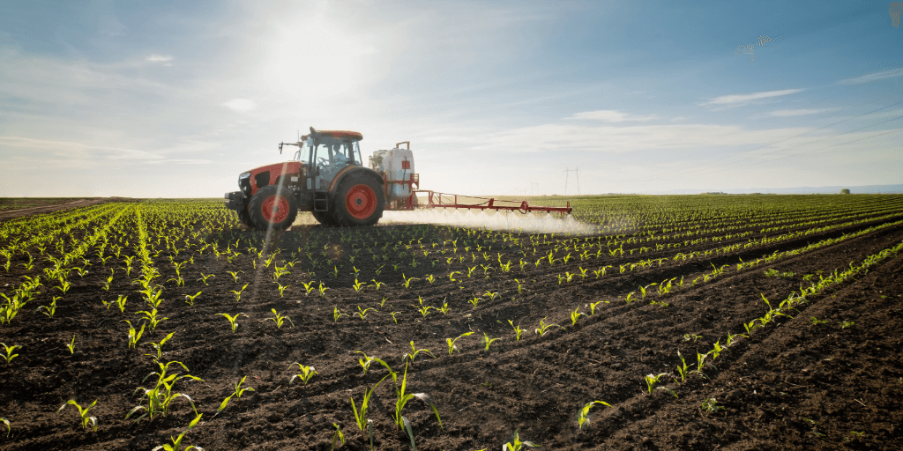

- O Plantio Direto é uma técnica de cultivo agrícola que busca preservar a estrutura do solo, evitando sua erosão e degradação. Nesse método, a terra não é arada nem revolvida antes do plantio, sendo apenas perfurada para a inserção das sementes. A cobertura vegetal anterior é mantida sobre o solo, servindo como proteção contra agentes erosivos, controle de ervas daninhas e retenção de umidade. O plantio direto contribui para a conservação do solo e da água, redução da emissão de gases de efeito estufa e aumento da eficiência produtiva.
- A Rotação de Culturas é uma prática agrícola que envolve alternar diferentes tipos de plantio em uma mesma área ao longo do tempo. Isso ajuda a melhorar a fertilidade do solo, reduzir o acúmulo de pragas e doenças e aumentar a produtividade das culturas. Por exemplo, ao alternar entre culturas que consomem nutrientes diferentes do solo, como milho e feijão, é possível evitar o esgotamento do solo e manter sua saúde a longo prazo.
- O Terraceamento é uma técnica de manejo do solo em áreas inclinadas, que consiste na construção de terraços ou degraus horizontais ao longo do terreno. Esses terraços ajudam a reduzir a erosão do solo, controlar o escoamento da água da chuva e aumentar a área útil para o cultivo. O terraceamento também pode contribuir para a retenção de umidade e a conservação do solo em regiões propensas a enchentes e deslizamentos.
- Além das técnicas mencionadas, existe o Afolhamento , um método de plantio que envolve dividir o terreno cultivável em duas partes plantadas e uma em descanso. Durante esse período de descanso, a área fica sem cultivo para permitir a recuperação de seus nutrientes. Após esse período, as áreas cultivadas e em afolhamento são alternadas, garantindo uma utilização mais sustentável do solo e a manutenção de sua fertilidade a longo prazo.
Visto isso, é evidente que os métodos certos para o plantio agrícola em questão são indispensáveis para a otmização de recursos, como produtos de controle de pragas, adubos, sementes e principalmente, a àgua.
